Serie de fuerza
Abdomen y core18:42
Ejercicio 3 de 4~6 min para terminar
 Primera vez
Primera vez
Crunch en máquina
Recto abdominal
Baja en 3 s, pausa 1 s abajo, sube en 1 s.
125 kg × 10
Serie 2Sugerido hoy: 25 kg
25kg
10reps
325 kg × 10 · pendiente
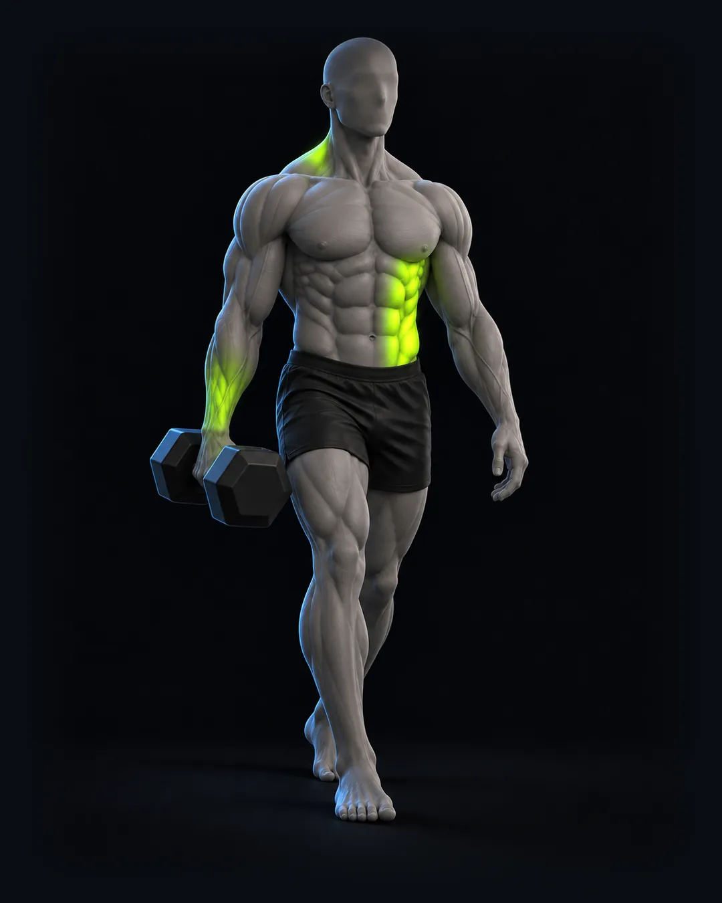
DespuésCaminata con peso unilateral
5:50
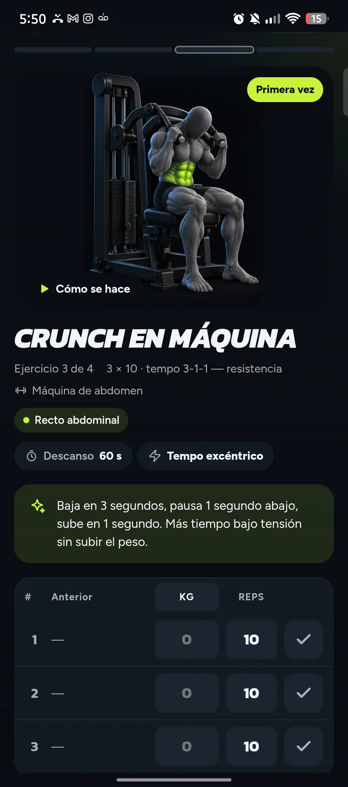
- La serie actual es lo más grande: dos controles de 72 px con − y + (no hay que abrir el teclado con las manos sudadas) y un solo botón “Serie 2 lista”.
- Las series hechas se encogen a una línea verde y las que faltan quedan tenues. El “2/3” gigante detrás de la figura se lee a la distancia del brazo.
- Chips, descanso y consejo pasan a una línea cada uno. La foto baja de media pantalla a un escenario más bajo y el botón queda a la altura del pulgar sin deslizar.
Descanso
Descansa · después de la serie 2Crunch en máquina
1:00
SigueSerie 3 · 25 kg × 10
5:51
- Al marcar la serie, el descanso toma toda la pantalla: el reloj gigante se ve desde la banca sin acercarse al teléfono.
- Dice qué sigue con su peso y trae dos botones grandes: +15 s y Saltar.
- Al terminar se pinta de verde y vibra, igual que hoy.
Por distancia
Abdomen y core24:10
Ejercicio 4 de 4 · el último~4 min para terminar
Caminata con peso unilateral
OblicuosCore
Hombros parejos: que la mancuerna no te incline.
Vuelta 1Cambia de mano en cada vuelta
16kg
30metros
216 kg · 30 m · pendiente
316 kg · 30 m · pendiente
5:50
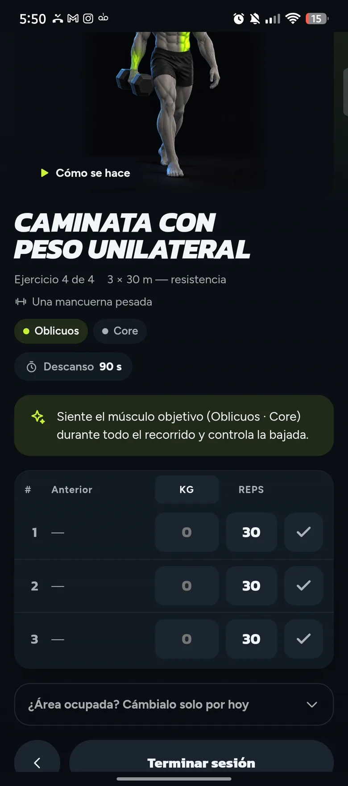
- Error de hoy: la caminata de 3 × 30 m pide “REPS 30” y el peso sale en 0. Debe decir metros y sugerir un peso.
- El “30 m” gigante detrás de la figura dice de un vistazo cuánto caminar.
- Para cargas y caminatas se habla de vueltas, no de series, y se avisa cambiar de mano.
Cardio
Abdomen y core0:12
Ejercicio 1 de 4~34 min en total
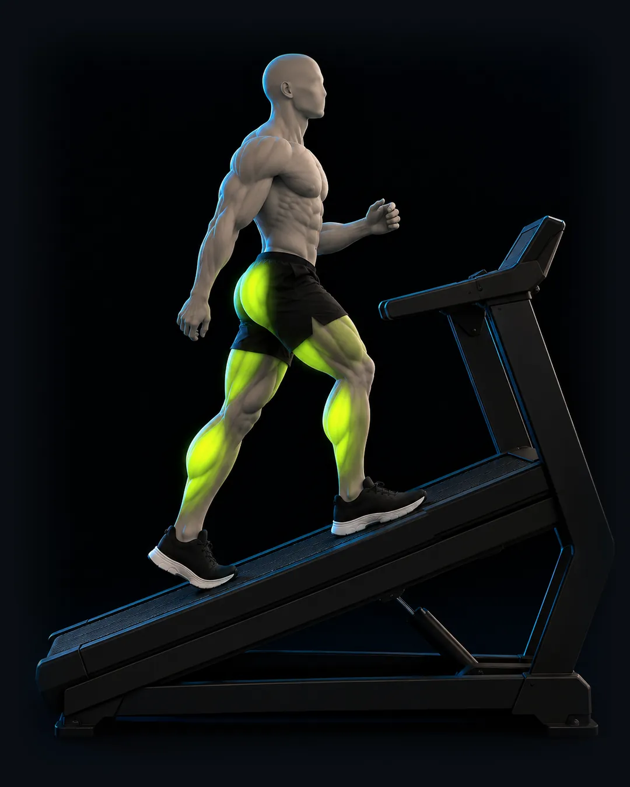
Caminata inclinada / elíptica
120–138 lpm
Ritmo en el que puedes hablar con frases cortas
Ritmo en el que puedes hablar con frases cortas
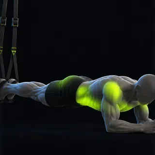
DespuésPlancha en TRX
5:50
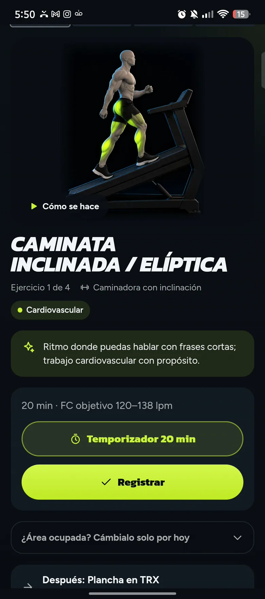
- Hoy hay dos botones que compiten (Temporizador y Registrar). Ahora hay uno solo: Empezar 20 min. Al terminar el tiempo, se registra solo.
- El reloj corre gigante detrás de la figura y la frecuencia objetivo queda a la vista. Toca “Empezar” para verlo.
- “Ya lo hice: registrarlo” queda como opción secundaria.
Mi plan
Reto Fit CCAArranca el 11 de enero · faltan 52 días
0ptsMi plan
Recomposición corporal · 5 días por semana
Accesorios+ Core
Hoy · viernes 204 ejercicios~40 minCore y abdomen
1
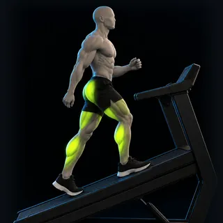
Caminata inclinada / elíptica20 min
2
Plancha en TRX3 × 25 s · isométrico
3
Crunch en máquina3 × 10 · tempo 3-1-1
Nuevo para ti
Nuevo para ti
4
Caminata con peso unilateral3 × 30 m
8:59
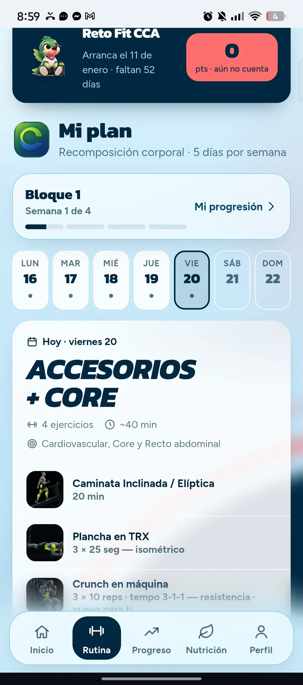
- Hoy el botón de empezar no aparece sin deslizar. Ahora “Empezar entrenamiento” queda en la primera vista, debajo de la sesión del día.
- La sesión de hoy es un escenario azul con su nombre gigante detrás de la figura del primer ejercicio.
- El bloque pasa de tarjeta a una línea y la semana marca hoy y los días de descanso.
Detalle del día
Torso A
 Lunes 16
Lunes 16
~35minutos
6ejercicios
20series
Pecho mayorDeltoidesDorsal ancho+3 más
Necesitas máquinas, rack, mancuernas y banco
Ejercicios
Toca uno para ver cómo se hace1
Press con máquina convergente3 × 10 · descanso 90 s
Tempo excéntrico
Tempo excéntrico
2
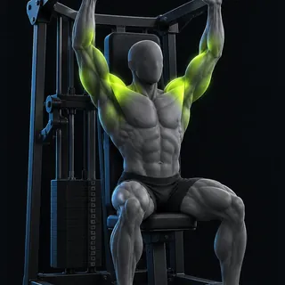
Press de hombro en máquina4 × 12-10-8-6 · descanso 90 s
Pirámide ascendente
Pirámide ascendente
3
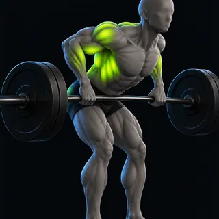
Remo con barra4 × 10 · descanso 90 s
4
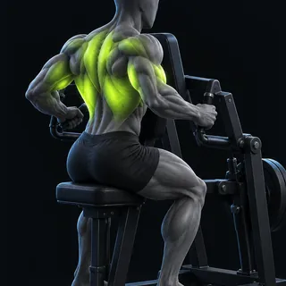
Remo en máquina con pecho apoyado3 × 10 · descanso 90 s
8:59
Es la del lunes: cuenta para esta semana
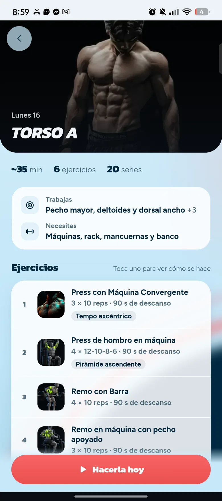
- El nombre de la sesión, chico hoy, pasa a “TORSO A” gigante detrás de la foto.
- Los números van grandes y sin recuadro. Los músculos se ven como etiquetas y lo que necesitas cabe en una línea.
- El botón dice por qué “hoy”: es la sesión del lunes y cuenta para esta semana.